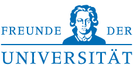

The aim of WPTE is to bring together the researchers working on program transformations, evaluation, and operationally based programming language semantics, using rewriting methods, in order to share the techniques and recent developments and to exchange ideas to encourage further activation of research in this area.
Topics of interest in the scope of this workshop include:
The programming languages of interest include pure, deterministic, impure, nondeterministic, concurrent, parallel languages, and may employ programming paradigms such as functional, logical, typed, imperative, object-oriented, and higher-order.
The Second International Workshop on Rewriting Techniques for Program Transformations and Evaluation is a satellite event of RDP 2015 and takes place at Warsaw, Poland on 2nd July 2015!
The WPTE-proceedings are published in the OpenAccess Series in Informatics (OASIcs) of Schloss Dagstuhl Leibniz-Zentrum für Informatik. The proceedings are available via http://www.dagstuhl.de/dagpub/978-3-939897-70-5.
Extended abstracts on work in progress are not included in the OASIcs proceedings but
they are included on the VSL flashdrive which is distributed to the workshop partipicants.
The call for papers is also available in PDF-format and TXT-format.
WPTE accepts two different kinds of contributions:
One author of each accepted paper or abstract is expected to present it at the workshop.
Important Dates:
Location: Freihaus (FH), Hörsaal 4 (Wiedner Hauptstraße 8-10, 1040 Vienna), overview map.
Information on the VSL meeting locations can be found on the page http://vsl2014.at/venue/locations/
More information on the venue can be found on the venue pages of VSL 2014.
|  |
Vereinigung von Freunden und Förderern der Johann Wolfgang Goethe Universität Frankfurt am Main e.V. |
{kind=link}